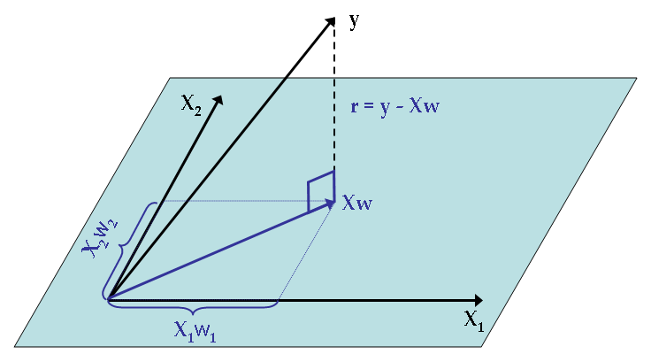

Chapter 7 Linear and logistic regression
Regression is the first machine learning algorithm. It allows you to model a target variable \(y\) depending on a set of explanatory variables or features \(X\) such that \(y=f(X) + \epsilon\) where \(f\) is a linear function (for linear regression).
7.1 Linear regression
We will jump directly to the multiple regression model, which is the generalization of the simple linear model, which you can check here
7.1.1 General presentation
The basic equation of the linear regression is \[ y_i = x_i \cdot b + \epsilon_i \Leftrightarrow y_i = \sum_{j=1}^p x_{ij} b_j + \epsilon_i\]
Where :
- \(x_i\) is a row-vector of size p (number of explanatory variables), containng the values of each feature of observation i. It is the row i of the matrix \(X = (x_{ij})\)
- b is a column-vector of coefficients, one per explanatory variable
- \(\epsilon_i\) is the error term for observation i
This regression is said to be linear because it is linear in the parameters, you can however transform the original variables at will with non-linear functions (see feature engineering).
The biggest assumptions of this model are :
- Observations are iid
- There is no perfect multi-collinearity among features
- \(\epsilon_i\) has a zero conditional mean \(\mathbb{E}(\epsilon | X)=0\)
This last condition helps us to derive an estimator for b (which can be derived in several ways) which is called the OLS estimator (Ordinary Least Squares), which is the solution of the optimization program :
\[\hat{b}=argmin_b \sum_{i=1}^n \epsilon_i^2 = argmin_b \sum_{i=1}^n (y_i-x_i \cdot b)^2\]
The solution is \(\hat{b} = (X'X)^{-1}X'y\) where \(X'=t(X)\). \((X'X)^{-1}X\) is the projection matrix over the hyperplane defined by the features.

7.1.2 Implementation and diagnostics
To implement a linear regression with R, we use the lm function :
reg <- lm(avgSpeed~avgPower + avgBikeCadence + distance + avgHr + max20MinPower, data=dat_bike)
summary(reg)##
## Call:
## lm(formula = avgSpeed ~ avgPower + avgBikeCadence + distance +
## avgHr + max20MinPower, data = dat_bike)
##
## Residuals:
## Min 1Q Median 3Q Max
## -39.858 -4.934 -0.770 4.946 23.774
##
## Coefficients:
## Estimate Std. Error t value Pr(>|t|)
## (Intercept) 108.95343 4.94740 22.022 <2e-16 ***
## avgPower 0.29912 0.01782 16.789 <2e-16 ***
## avgBikeCadence -1.41070 0.04489 -31.428 <2e-16 ***
## distance 0.11346 0.00917 12.373 <2e-16 ***
## avgHr -0.01114 0.02210 -0.504 0.614
## max20MinPower -0.12324 0.01369 -9.005 <2e-16 ***
## ---
## Signif. codes: 0 '***' 0.001 '**' 0.01 '*' 0.05 '.' 0.1 ' ' 1
##
## Residual standard error: 7.425 on 920 degrees of freedom
## (1909 observations deleted due to missingness)
## Multiple R-squared: 0.7813, Adjusted R-squared: 0.7802
## F-statistic: 657.5 on 5 and 920 DF, p-value: < 2.2e-16The goodness of fit is measured through 2 main statistics :
- Adjusted R-squared, \(1- \dfrac{n-1}{n-k-1} \dfrac{SSR}{TSS} \in [0,1]\), which takes the number of regressors into account. The closer to 1, the better the fit
- RMSE (root mean squared error), or residual standard error which has to be compared to the average value of \(y\). the smaller the value, the better the fit.
7.1.3 Coefficients interpretation and inference
Back to original equation, we can understand how much each feature influences in average the output.
\[ \dfrac{\partial y}{\partial x_1} = b_1\] Meaning that the increase of \(x_1\) by one unit causes the output to increase in average by \(b_1\) (which can of course be negative). In our example, one additional watt will result in an increase of the average speed by 0.25 km/h
The fundamental hypothesis being fulfilled and the sample being large enough, the distribution of the OLS estimate \((b_1,...,b_p)\) are jointly normally distributed, meaning that each \(\hat{b_j} \hookrightarrow \mathcal{N}(b_j,\sigma_{b_j}^2)\) We can therefore perform statistical tests following the previous methodology (see @ref(stat_inf).
The most common test is the Student test which tests the null hypothesis \(b_i=0\). This allows to check whether a regressor has a significant effect on the target variable or not.
But you have to check your residuals !
residuals(reg) %>%
data.frame(res=.) %>%
ggplot(aes(res)) + geom_density() + theme_minimal()Those are pretty long tailed, which might reflect some outliers or a wrong functional specification !
7.1.4 The Frisch–Waugh Theorem and the omitted variable bias
The Frisch-Waugh theorem tells us that adding a variable as regressor ensures that our estimates controls for the effect of this variable. In other words, you can interpret the coefficients’ values ceteris paribus (other things equal).
This also means that if you omit a variable, the coefficient of the other variables are likely to be biased, because you did not take an important variable into account. Back to our example, we can add the elevationGain variable and check what happens :
reg <- lm(avgSpeed~avgPower + avgBikeCadence + distance + avgHr + max20MinPower + elevationGain, data=dat_bike)
summary(reg)##
## Call:
## lm(formula = avgSpeed ~ avgPower + avgBikeCadence + distance +
## avgHr + max20MinPower + elevationGain, data = dat_bike)
##
## Residuals:
## Min 1Q Median 3Q Max
## -29.0440 -4.1401 -0.2226 3.6978 19.4709
##
## Coefficients:
## Estimate Std. Error t value Pr(>|t|)
## (Intercept) 1.145e+02 4.572e+00 25.032 < 2e-16 ***
## avgPower 1.762e-01 1.683e-02 10.468 < 2e-16 ***
## avgBikeCadence -1.396e+00 4.485e-02 -31.132 < 2e-16 ***
## distance 2.041e-01 1.002e-02 20.364 < 2e-16 ***
## avgHr 1.299e-02 1.916e-02 0.678 0.49799
## max20MinPower -3.758e-02 1.297e-02 -2.898 0.00386 **
## elevationGain -1.358e-02 7.626e-04 -17.805 < 2e-16 ***
## ---
## Signif. codes: 0 '***' 0.001 '**' 0.01 '*' 0.05 '.' 0.1 ' ' 1
##
## Residual standard error: 6.283 on 754 degrees of freedom
## (2074 observations deleted due to missingness)
## Multiple R-squared: 0.7441, Adjusted R-squared: 0.742
## F-statistic: 365.3 on 6 and 754 DF, p-value: < 2.2e-16See how the coefficients changed. This is understandable because when climbing mountains :
- More power will not increase the speed, just maintain it (… or not)
- The cadence is harder to maintain unless you have unlimited gears !
- The surprising negative effect of the max20MinPower is no more
Notice though that the RMSE and the adjusted \(R^2\) degraded… See the variable selection to see how to mitigate that problem.
7.1.5 Feature engineering and functional specification
The omitted variable bias makes it very important to include as much variables as possible if you want to be able to estimate the coefficient as accurately as possible. What you can do is add :
- Exponents to the regressors
- Interactions between regressors
Example with 2 variables \(y=b_1x_1 + b_2x_2 + b_3x_1^2 + b_4x_1x_2 + \epsilon\)
In this case : \(\dfrac{\partial y}{\partial x1} = b_1+2b_3x_1+b_4x_2\)
reg <- lm(avgSpeed~ avgPower + I(avgPower^2) + avgBikeCadence +
distance + I(avgPower*distance)+ avgHr + max20MinPower , data=dat_bike)
summary(reg)##
## Call:
## lm(formula = avgSpeed ~ avgPower + I(avgPower^2) + avgBikeCadence +
## distance + I(avgPower * distance) + avgHr + max20MinPower,
## data = dat_bike)
##
## Residuals:
## Min 1Q Median 3Q Max
## -39.079 -4.647 -0.741 4.600 23.527
##
## Coefficients:
## Estimate Std. Error t value Pr(>|t|)
## (Intercept) 98.6948840 12.6015315 7.832 1.32e-14 ***
## avgPower 0.2597003 0.0974026 2.666 0.00781 **
## I(avgPower^2) 0.0002079 0.0001771 1.174 0.24056
## avgBikeCadence -1.3118683 0.0478793 -27.399 < 2e-16 ***
## distance 0.5386573 0.0776404 6.938 7.51e-12 ***
## I(avgPower * distance) -0.0016752 0.0003052 -5.489 5.22e-08 ***
## avgHr -0.0232959 0.0218618 -1.066 0.28689
## max20MinPower -0.1228978 0.0137991 -8.906 < 2e-16 ***
## ---
## Signif. codes: 0 '***' 0.001 '**' 0.01 '*' 0.05 '.' 0.1 ' ' 1
##
## Residual standard error: 7.309 on 918 degrees of freedom
## (1909 observations deleted due to missingness)
## Multiple R-squared: 0.7886, Adjusted R-squared: 0.787
## F-statistic: 489.2 on 7 and 918 DF, p-value: < 2.2e-16reg_full <- lm(avgSpeed~(avgPower + avgBikeCadence + distance + avgHr + max20MinPower + elevationGain)^2, data=dat_bike)
summary(reg_full)##
## Call:
## lm(formula = avgSpeed ~ (avgPower + avgBikeCadence + distance +
## avgHr + max20MinPower + elevationGain)^2, data = dat_bike)
##
## Residuals:
## Min 1Q Median 3Q Max
## -19.5744 -2.3189 -0.2251 2.0763 20.4421
##
## Coefficients:
## Estimate Std. Error t value Pr(>|t|)
## (Intercept) 1.961e+02 3.265e+01 6.005 3.00e-09 ***
## avgPower 1.553e+00 2.211e-01 7.024 4.89e-12 ***
## avgBikeCadence -2.072e+00 3.737e-01 -5.545 4.09e-08 ***
## distance -4.109e-01 1.872e-01 -2.196 0.0284 *
## avgHr -1.244e-01 2.728e-01 -0.456 0.6485
## max20MinPower -1.518e+00 2.015e-01 -7.532 1.46e-13 ***
## elevationGain -7.480e-02 1.452e-02 -5.152 3.32e-07 ***
## avgPower:avgBikeCadence -1.382e-02 2.412e-03 -5.730 1.47e-08 ***
## avgPower:distance 8.225e-04 6.085e-04 1.352 0.1769
## avgPower:avgHr -7.919e-04 1.134e-03 -0.699 0.4850
## avgPower:max20MinPower 3.357e-05 1.976e-04 0.170 0.8651
## avgPower:elevationGain -3.885e-04 4.514e-05 -8.606 < 2e-16 ***
## avgBikeCadence:distance 1.380e-02 2.071e-03 6.663 5.25e-11 ***
## avgBikeCadence:avgHr -9.734e-04 2.916e-03 -0.334 0.7386
## avgBikeCadence:max20MinPower 1.408e-02 1.927e-03 7.305 7.21e-13 ***
## avgBikeCadence:elevationGain 6.942e-04 1.302e-04 5.330 1.30e-07 ***
## distance:avgHr -1.022e-03 6.800e-04 -1.503 0.1332
## distance:max20MinPower -2.629e-03 4.449e-04 -5.910 5.22e-09 ***
## distance:elevationGain 2.655e-05 1.050e-05 2.529 0.0117 *
## avgHr:max20MinPower 1.664e-03 1.051e-03 1.583 0.1140
## avgHr:elevationGain 1.373e-04 7.622e-05 1.802 0.0720 .
## max20MinPower:elevationGain 2.854e-04 2.685e-05 10.626 < 2e-16 ***
## ---
## Signif. codes: 0 '***' 0.001 '**' 0.01 '*' 0.05 '.' 0.1 ' ' 1
##
## Residual standard error: 4.606 on 739 degrees of freedom
## (2074 observations deleted due to missingness)
## Multiple R-squared: 0.8652, Adjusted R-squared: 0.8614
## F-statistic: 225.9 on 21 and 739 DF, p-value: < 2.2e-167.1.6 Variable selection
So far we focused on getting the best coefficient estimates to be able to interpret how features impact our target variable (“explainable AI”), but following the previous logic, adding the more feature the better ! However, when focusing on the best prediction, you are more interested in finding the most general model which will perform well out of sample adding more and more variables can lead, as a matter of fact, to an overfitted model, which will hardly generalize.
This is illustration of the bias-variance trade-off which you will see more in depth during the machine learning session.
 Regarding regression, avoiding overfitting can be done with variable selection : starting from an extensive model, the procedure will try every feature combination that leads to the best prediction. There are 3 ways of constructing the models :
Regarding regression, avoiding overfitting can be done with variable selection : starting from an extensive model, the procedure will try every feature combination that leads to the best prediction. There are 3 ways of constructing the models :
- backward selection : remove the less useful feature at a time
- forward selection : introduce the most useful feature at a time
- stepwise selection : a mixture of the previous methods
The quality of each model is determined by the AIC or BIC which are a function of the opposite of the log-likelihood (because OLS can also be estimated with MLE) and the number of parameters. The lower this number, the better the model.
We can implement this method easily
selection <- step(reg_full)## Start: AIC=2346.23
## avgSpeed ~ (avgPower + avgBikeCadence + distance + avgHr + max20MinPower +
## elevationGain)^2
##
## Df Sum of Sq RSS AIC
## - avgPower:max20MinPower 1 0.61 15677 2344.3
## - avgBikeCadence:avgHr 1 2.36 15678 2344.3
## - avgPower:avgHr 1 10.35 15686 2344.7
## - avgPower:distance 1 38.75 15715 2346.1
## <none> 15676 2346.2
## - distance:avgHr 1 47.93 15724 2346.6
## - avgHr:max20MinPower 1 53.13 15729 2346.8
## - avgHr:elevationGain 1 68.85 15745 2347.6
## - distance:elevationGain 1 135.64 15812 2350.8
## - avgBikeCadence:elevationGain 1 602.68 16279 2372.9
## - avgPower:avgBikeCadence 1 696.37 16372 2377.3
## - distance:max20MinPower 1 740.94 16417 2379.4
## - avgBikeCadence:distance 1 941.73 16618 2388.6
## - avgBikeCadence:max20MinPower 1 1131.87 16808 2397.3
## - avgPower:elevationGain 1 1570.92 17247 2416.9
## - max20MinPower:elevationGain 1 2395.30 18072 2452.4
##
## Step: AIC=2344.26
## avgSpeed ~ avgPower + avgBikeCadence + distance + avgHr + max20MinPower +
## elevationGain + avgPower:avgBikeCadence + avgPower:distance +
## avgPower:avgHr + avgPower:elevationGain + avgBikeCadence:distance +
## avgBikeCadence:avgHr + avgBikeCadence:max20MinPower + avgBikeCadence:elevationGain +
## distance:avgHr + distance:max20MinPower + distance:elevationGain +
## avgHr:max20MinPower + avgHr:elevationGain + max20MinPower:elevationGain
##
## Df Sum of Sq RSS AIC
## - avgBikeCadence:avgHr 1 2.45 15679 2342.4
## - avgPower:avgHr 1 9.74 15686 2342.7
## - avgPower:distance 1 38.31 15715 2344.1
## <none> 15677 2344.3
## - distance:avgHr 1 49.74 15726 2344.7
## - avgHr:max20MinPower 1 56.24 15733 2345.0
## - avgHr:elevationGain 1 68.51 15745 2345.6
## - distance:elevationGain 1 136.21 15813 2348.8
## - avgBikeCadence:elevationGain 1 603.23 16280 2371.0
## - avgPower:avgBikeCadence 1 698.23 16375 2375.4
## - distance:max20MinPower 1 764.90 16442 2378.5
## - avgBikeCadence:distance 1 947.00 16624 2386.9
## - avgBikeCadence:max20MinPower 1 1134.60 16811 2395.4
## - avgPower:elevationGain 1 1615.03 17292 2416.9
## - max20MinPower:elevationGain 1 2404.88 18082 2450.9
##
## Step: AIC=2342.37
## avgSpeed ~ avgPower + avgBikeCadence + distance + avgHr + max20MinPower +
## elevationGain + avgPower:avgBikeCadence + avgPower:distance +
## avgPower:avgHr + avgPower:elevationGain + avgBikeCadence:distance +
## avgBikeCadence:max20MinPower + avgBikeCadence:elevationGain +
## distance:avgHr + distance:max20MinPower + distance:elevationGain +
## avgHr:max20MinPower + avgHr:elevationGain + max20MinPower:elevationGain
##
## Df Sum of Sq RSS AIC
## - avgPower:avgHr 1 9.62 15689 2340.8
## - avgPower:distance 1 37.59 15717 2342.2
## <none> 15679 2342.4
## - distance:avgHr 1 52.05 15731 2342.9
## - avgHr:max20MinPower 1 55.42 15735 2343.1
## - avgHr:elevationGain 1 76.51 15756 2344.1
## - distance:elevationGain 1 135.62 15815 2346.9
## - avgBikeCadence:elevationGain 1 610.23 16290 2369.4
## - avgPower:avgBikeCadence 1 755.98 16435 2376.2
## - distance:max20MinPower 1 763.12 16442 2376.5
## - avgBikeCadence:distance 1 961.69 16641 2385.7
## - avgBikeCadence:max20MinPower 1 1144.49 16824 2394.0
## - avgPower:elevationGain 1 1638.36 17318 2416.0
## - max20MinPower:elevationGain 1 2403.13 18082 2448.9
##
## Step: AIC=2340.84
## avgSpeed ~ avgPower + avgBikeCadence + distance + avgHr + max20MinPower +
## elevationGain + avgPower:avgBikeCadence + avgPower:distance +
## avgPower:elevationGain + avgBikeCadence:distance + avgBikeCadence:max20MinPower +
## avgBikeCadence:elevationGain + distance:avgHr + distance:max20MinPower +
## distance:elevationGain + avgHr:max20MinPower + avgHr:elevationGain +
## max20MinPower:elevationGain
##
## Df Sum of Sq RSS AIC
## <none> 15689 2340.8
## - avgPower:distance 1 43.52 15732 2340.9
## - distance:avgHr 1 64.87 15754 2342.0
## - distance:elevationGain 1 130.08 15819 2345.1
## - avgHr:elevationGain 1 139.64 15828 2345.6
## - avgHr:max20MinPower 1 231.50 15920 2350.0
## - avgBikeCadence:elevationGain 1 611.18 16300 2367.9
## - distance:max20MinPower 1 760.18 16449 2374.8
## - avgPower:avgBikeCadence 1 928.82 16618 2382.6
## - avgBikeCadence:distance 1 959.00 16648 2384.0
## - avgBikeCadence:max20MinPower 1 1293.15 16982 2399.1
## - avgPower:elevationGain 1 1756.77 17446 2419.6
## - max20MinPower:elevationGain 1 2484.52 18173 2450.7summary(selection)##
## Call:
## lm(formula = avgSpeed ~ avgPower + avgBikeCadence + distance +
## avgHr + max20MinPower + elevationGain + avgPower:avgBikeCadence +
## avgPower:distance + avgPower:elevationGain + avgBikeCadence:distance +
## avgBikeCadence:max20MinPower + avgBikeCadence:elevationGain +
## distance:avgHr + distance:max20MinPower + distance:elevationGain +
## avgHr:max20MinPower + avgHr:elevationGain + max20MinPower:elevationGain,
## data = dat_bike)
##
## Residuals:
## Min 1Q Median 3Q Max
## -19.7174 -2.3064 -0.2534 2.1279 20.3154
##
## Coefficients:
## Estimate Std. Error t value Pr(>|t|)
## (Intercept) 1.999e+02 2.767e+01 7.224 1.26e-12 ***
## avgPower 1.512e+00 1.975e-01 7.654 6.05e-14 ***
## avgBikeCadence -2.101e+00 3.041e-01 -6.909 1.05e-11 ***
## distance -4.161e-01 1.858e-01 -2.239 0.025442 *
## avgHr -2.298e-01 7.599e-02 -3.024 0.002580 **
## max20MinPower -1.439e+00 1.725e-01 -8.345 3.46e-16 ***
## elevationGain -7.806e-02 1.384e-02 -5.642 2.39e-08 ***
## avgPower:avgBikeCadence -1.451e-02 2.190e-03 -6.628 6.55e-11 ***
## avgPower:distance 8.617e-04 6.006e-04 1.435 0.151793
## avgPower:elevationGain -3.943e-04 4.325e-05 -9.115 < 2e-16 ***
## avgBikeCadence:distance 1.386e-02 2.058e-03 6.735 3.29e-11 ***
## avgBikeCadence:max20MinPower 1.430e-02 1.828e-03 7.820 1.81e-14 ***
## avgBikeCadence:elevationGain 6.977e-04 1.298e-04 5.376 1.02e-07 ***
## distance:avgHr -1.151e-03 6.570e-04 -1.752 0.080266 .
## distance:max20MinPower -2.595e-03 4.328e-04 -5.996 3.16e-09 ***
## distance:elevationGain 2.587e-05 1.043e-05 2.480 0.013345 *
## avgHr:max20MinPower 1.010e-03 3.051e-04 3.309 0.000982 ***
## avgHr:elevationGain 1.648e-04 6.412e-05 2.570 0.010367 *
## max20MinPower:elevationGain 2.872e-04 2.649e-05 10.840 < 2e-16 ***
## ---
## Signif. codes: 0 '***' 0.001 '**' 0.01 '*' 0.05 '.' 0.1 ' ' 1
##
## Residual standard error: 4.598 on 742 degrees of freedom
## (2074 observations deleted due to missingness)
## Multiple R-squared: 0.8651, Adjusted R-squared: 0.8618
## F-statistic: 264.4 on 18 and 742 DF, p-value: < 2.2e-167.1.7 Exercises
- Design a regression model that will predict best the theoretical average speed for indoor bike activities (that have no speed, no coordinates…).
- Feature importance can be very important. Example : to prepare for competitions (that take place between may-september), I always follow a structured training plan at some point. This has a direct impact on the performances. Can you identify when this preparation starts and how to integrate it in the model ? This is somehow connected to your assignment ;)
- Can you identify the measurement errors (thanks to residuals)
- From the last functional specification used, design a graphic that shows the final impact of an increase in power to the average speed, taking the distance into account.
7.2 Logitic regression
7.2.1 Mathematical formulation
Logistic regression aims to model a binary output. In this case, \(y \in \{0,1\}\) and the previous specification can’t apply. We still have a linear relationship, but which applies to the log-odd ratio :
\[log \dfrac{\mathbb{P}(y=1|x)}{1-\mathbb{P}(y=1|x)} = log \dfrac{^p}{1-p} = x_ib + \epsilon_i\]
This is called the link function and working the expression further we find that : \(p(x_i;b) = \mathbb{P}(y_i=1|x_i) = \dfrac{1}{1+e^{-x_ib}}\)
This allows us to derive the likelihood :
\[\mathcal{L}(b) = \prod_{i=1}^n p(x_i;b)^{y_i} \cdot (1-p(x_i;b))^{1-y_i}\]
This expression can be simplified, but there is no exact expression as for the OLS \(\rightarrow\) the optimal solution has to be found via numerical optimization (eg Newton-Raphson).
7.2.2 Implementation in R and interpretation
In R, we use the glm function while specifying the family. We model the probability of an activity to be bike or something else, which is a binary variable.
logit <- glm(is_bike~distance+duration+elevationGain+avgSpeed+avgHr,data=dat_clean,family = "binomial")
summary(logit)##
## Call:
## glm(formula = is_bike ~ distance + duration + elevationGain +
## avgSpeed + avgHr, family = "binomial", data = dat_clean)
##
## Deviance Residuals:
## Min 1Q Median 3Q Max
## -2.5243 -0.7947 0.1971 0.5615 3.0610
##
## Coefficients:
## Estimate Std. Error z value Pr(>|z|)
## (Intercept) 4.592e+00 3.531e-01 13.006 < 2e-16 ***
## distance 2.096e-02 6.167e-03 3.398 0.000679 ***
## duration 3.971e-03 2.308e-03 1.720 0.085343 .
## elevationGain -7.682e-05 3.781e-05 -2.031 0.042206 *
## avgSpeed 9.066e-02 8.251e-03 10.988 < 2e-16 ***
## avgHr -4.760e-02 2.445e-03 -19.468 < 2e-16 ***
## ---
## Signif. codes: 0 '***' 0.001 '**' 0.01 '*' 0.05 '.' 0.1 ' ' 1
##
## (Dispersion parameter for binomial family taken to be 1)
##
## Null deviance: 5287.9 on 3819 degrees of freedom
## Residual deviance: 3466.6 on 3814 degrees of freedom
## (1980 observations deleted due to missingness)
## AIC: 3478.6
##
## Number of Fisher Scoring iterations: 5The sign of the coefficient indicates whether the feature increases the probability for an activity to be a ride ride or not. However, the values cannot be interpreted as directly as in the case of the linear regression. But you can use the exponent of the value of the coefficient and interpret it in terms of odd-ratios. For instance, adding one more kilometer to the average distance multiplies the probability for an activity to be a ride rather than anything else by 1.0211775, meaning 4% more chances. In the contrary, an activity that has 1 bpm more than the average HR has 4.6483832 6% less chances to be a ride. This makes sense because, as observed earlier, rides are longer and the heart rate is a bit smaller than for other activities.
7.2.3 Goodness of fit
As you might have noticed, there is no \(R^2\) or RMSE in our case, just the AIC (which only allows you to compare different models, not know how good the model is). What we can do is check the fitted values of the model and the actual values
pred <- predict(logit,dat_clean,type="response")
pred_bin <- as.numeric(pred>.5)
table(pred_bin,dat_clean$is_bike)##
## pred_bin FALSE TRUE
## 0 1688 404
## 1 136 1592And we can compute the accuracy as the sum of correct predictions divided by total number of activities : 0.8296412 You can derive other goodness of fit metrics from the previous confusion matrix :
- Sensitivity (recall) : \(\dfrac{TP}{TP+FN}\)
- Specificity : \(\dfrac{TN}{TN+FP}\)
- Precision : \(\dfrac{TP}{TP+FP}\)

Depending on your business use case, you will focus more on one or the other metric. You will cover this in more detail durinng the machine learning week :)
7.2.4 Exercises
- Fit a model for avgSpeed with all activities (including the activity type)
- Fit a model to guess whether an activity is a run or something else